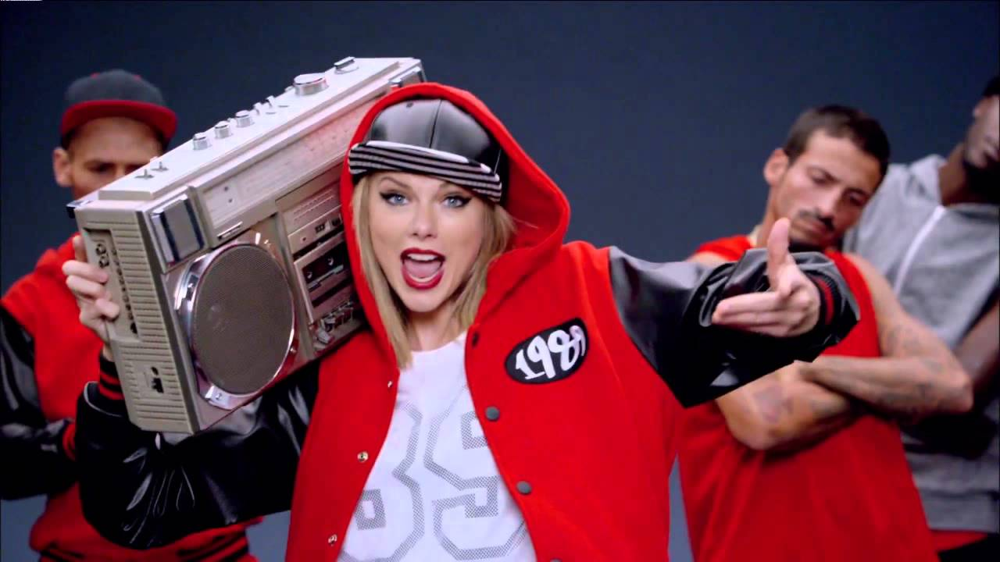

Shake it off

Sobre que trata
La cantante explicó que Shake It Off "se basó en parte en las experiencias de mi vida y, en particular, en el escrutinio público implacable de mi vida personal, las noticias 'clickbait', la manipulación pública y otras formas de crítica personal negativa